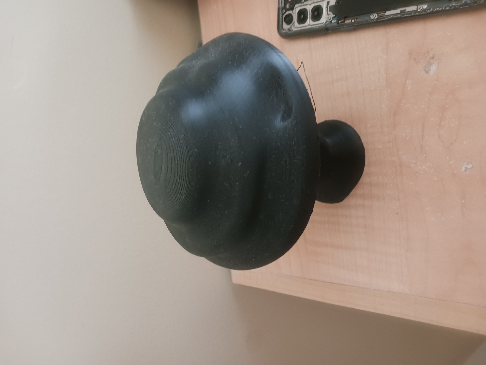
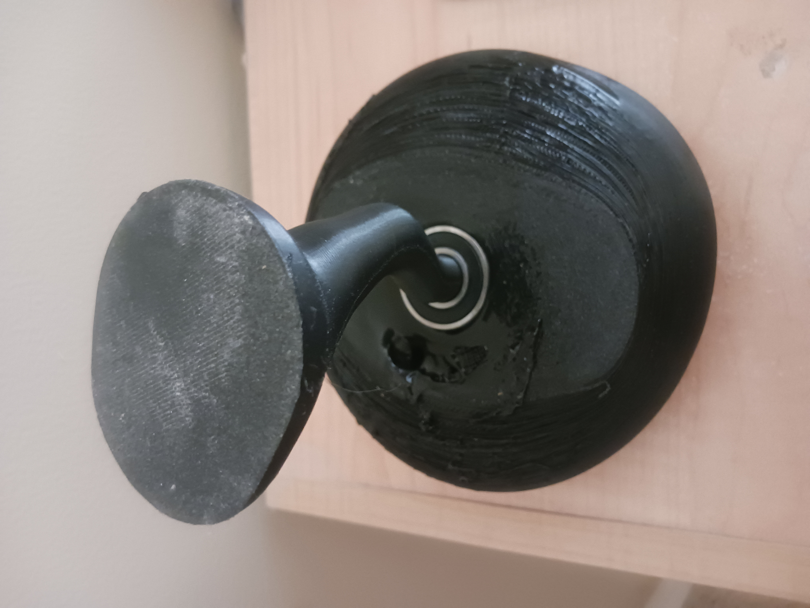
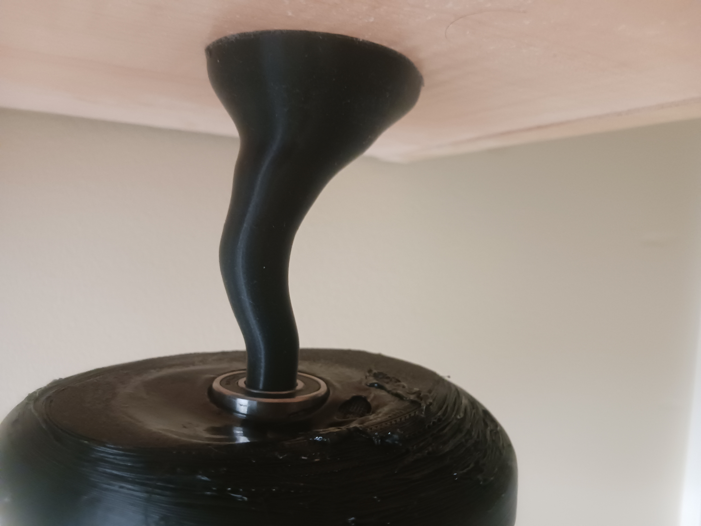

Hello all, this article will guide you through how you can make your own 3d printed mushroom and give it a spinning top. First let's look at the tools you'll need.
- A heat gun
- 3d printer + filament (ABS or PETG work)
- Altimaker Cura (free software)
- Fusion 360 (free for students)
- Ball bearing
If you just want to make the final thing and not learn about 3d modeling, you'll be able to find the files at the end of this article.
Making the cap
You'll need to design two parts: The Stem and the head. This seems simple enough, right? But you're also going to have to incorporate the ball bearing and learn a little physics on the way. Let's start with the head. Start with a cylinder and then use cylindrical symmetry in the forms workspace. You'll want to curve in the the top to in a sort of wavy shape when seen from the side. Go to a side view and do this manually.
After you've done that, you'll need to seal the top of the cap. There's a button in the form workspace that will do this once you've selecte the top. Then for some aesthetics use push-pull to give the head a little uniqueness. Don't worry too much about how it looks, it really comes together when you print it and try exploring random tools just for the aesthetics. At the end, Just make a sketch on the base XY plane and extrude a cylinder to make a hole the size of the outer ring of your ball bearing and then about 2mm more in diameter and extrude it up about 5 millimeters.
Stem
Now making the stem, this is where we do a little engineering. You don't want a straight vertical stem, making an elegant S-curve as Mark Kistler points out makes things way more interesting. Once again do the combination Cylinder -> -> Symmetry -> Push-Pull combo to your aesthetic delight. Just make sure that the stem at the top is the inner radius of your ball bearing and the bottom is flat (you can find a flatten tool in the forms workspace to do this for you or just form a plane at the bottom). However, after this we need to do a little physics.

One thing you learn in physics is called the center of mass. The center of mass is the center of all the weight of an object. For a ball, this is the center, same for a cube or a cylinder. For things like a cone, it gets more tricky and with curvy, organic shapes it becomes an algorithmic issue. But why do we care? Because if you have the center of mass directly over your base, then you're print balances! Yes, that is the secret of why things tip over! This is true for everything from bowling pins (if the center of mass goes over the edge of the base as it tilts, it will fall) to rocks (the center of mass must be right over the base to get them to stand up.) When you think of it this way, a lot of things make sense. That's practical physics!
Fusion has a tool for this actually. Using the center of mass tool in the design workspace inspect menu. When you're finding the center of mass of the entire object, make sure to select both the body of the stem and the head of the mushroom. The center of mass will be displayed on the screen. You can then adjust the shape of the stem until the center of mass is directly over the center of the base. For good measure, I also included the McMaster-Carr Ball bearing in the stem in order to be more accurate, but it won't affect the center of mass at all.

Finalizing and Printing
Once you're done designing, you'll want to export the head and stem as .STL files. I use Altimaker Cura to slice my models, you can find other resources to set it up online. After printing it you'll need to use a heat gun to melt the plastic around the Ball bearing to seal the bearing in the head. Your bearing is intially loose, but after melting it should be solid. The bearing will spin around the stem but will be stationary in the cap. And with that you're done! I hope you learned a lot about physics and got some experience with professional CAD tools through this article.

"Politics isn't about winners and losers, it's about learners and non-learners"
— I. Forgetwho